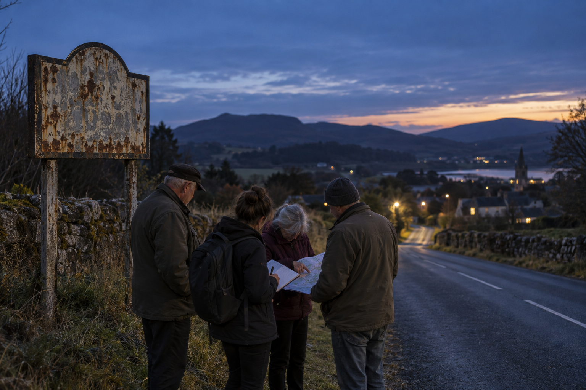

Inside the towns being erased from the official map
A six-month investigation into vanished boundaries, withheld records, and the people refusing to disappear.
Thursday · Today’s briefing
A six-month investigation into vanished boundaries, withheld records, and the people refusing to disappear.
Held for verified reporting milestones. Every payout is visible below; journalist identities remain private.
Transparent amounts. Protected identities.
Give readers a clear, specific headline
Paste notes, verified facts, and context. Source names can be marked for automatic redaction.
Your legal identity is verified in a private vault and never linked to published work or wallet activity.
Available from 6 reporting payouts
Public records say these communities no longer exist. Their residents—and our reporting—show otherwise.

Residents gather near the county line. Identity details were separated from source files.At the edge of the state archive, a paper map still carries the names. In the digital record, they are gone. Over six months, Northstar reviewed planning files and spoke with families whose addresses vanished without notice.
The result is not simply a cartographic error. It is a story about services, representation, and who is allowed to remain visible.